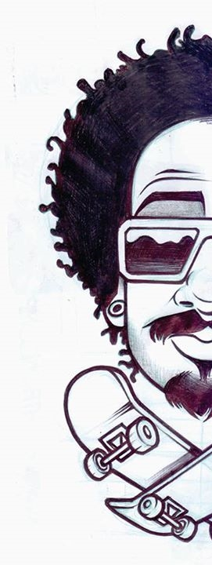

Inicio
Inicio Sobre nós
Sobre nós Galeria
Galeria Equipe
Equipe Contato
Contato
Conceito
Registrando a arte da rua.
Buscando sempre usar a fotografia a favor da cultura urbana contemporânea, a Perrotta Photography tem como objetivo essencial dar voz as mais diversas formas de expressão contidas na rua, local este que acreditamos ser o mais receptivo para cada manifestação, sem regras ou pré-requisitos excludentes.
Retratada em muros, movimentos e esportes, em cada canto enxergamos a possibilidade de revelar o marco ímpar de um indivíduo ou, até mesmo, uma geração. Convenhamos, quantas vezes você já viu exatamente os mesmos desenhos ou frases sobre muros diferentes? Isso mesmo! Cada ambiente é único, se não somente por sua mensagem, pela forma como interage com os elementos que o compõem. Como interage com você.
Se outrora a arte era propriedade de poucos, a partir do momento em que a rua foi retomada como espaço público, ela se tornou democrática. Isto é o que mais nos encanta, não somente como observadores, mas como parte atuante dessa reafirmação diária de domínio coletivo.
Friedrich Nietzsche dizia que “temos a arte para não morrer da verdade”,já Sebastião Salgado, que “você não fotografa com sua máquina. Você fotografa com toda sua cultura”. Para a Perrotta Photography, em concordância, não há morte ou máquina que ultrapasse a beleza de poder retratar o momento único em que a autonomia da vida nas cidades explode e se finca para sempre na História. Em nossos olhos, em nossos passos ou em nossos retratos.